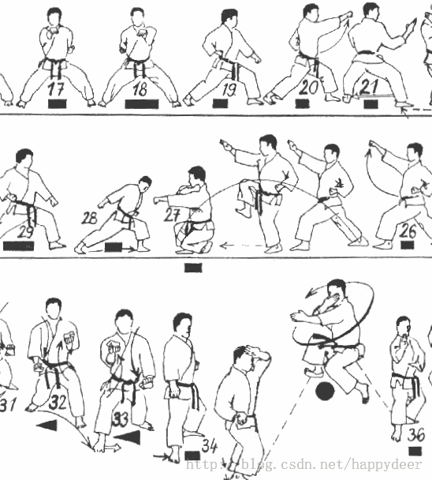

Recientemente, he leído muchos artículos de Steve Yegge. Uno de ellos se llama "Practicing Programming" (Practicando la programación), escrito en 2005, y después de leerlo me sorprendió mucho:
Contrario a lo que crees, simplemente dedicarse de lleno al trabajo todos los días no cuenta como ejercicio en el verdadero sentido: asistir a reuniones no ejercita tus habilidades interpersonales; responder correos electrónicos no mejora tu velocidad de escritura. Debes reservar tiempo regularmente para practicar con concentración; solo así podrás hacer las cosas mejor.Esta es una diferencia importante: conduzco al trabajo todos los días, pero mi nivel de conducción está muy por debajo del de un piloto profesional; de manera similar, programar todos los días puede no ser suficiente para convertirte en un programador profesional. Entonces, ¿qué puede convertir a una persona común en un piloto o programador profesional? ¿Qué necesitas practicar?
Conozco a muchos programadores destacados: este es uno de los mejores "beneficios" adicionales de trabajar en Amazon. Si los observas de cerca, descubrirás que practican constantemente. Ya son excelentes, pero nunca dejan de practicar. Sus métodos de práctica son variados, y en este artículo solo presentaré algunos de ellos.
Según lo que sé, la razón por la que estos programadores destacados tienen tanto éxito es porque siempre están practicando. Un cuerpo perfecto solo se obtiene con ejercicio regular, y hay que mantenerlo con práctica constante; de lo contrario, se deforma. Lo mismo aplica a la programación y a la ingeniería de software.
La respuesta está en un artículo de Scientific American titulado "The Expert Mind" (La mente experta):
Ericsson propuso que lo importante no es la experiencia en sí, sino el "aprendizaje esforzado", es decir, desafiar constantemente aquello que está más allá de las propias capacidades. Esta es la razón por la que algunos aficionados entusiastas dedican muchísimo tiempo a jugar al ajedrez, al golf o a tocar instrumentos musicales, pero pueden quedarse siempre en un nivel amateur, mientras que un estudiante bien entrenado puede superarlos en un tiempo relativamente corto. Es digno de mención que, en cuanto a mejorar el nivel, invertir mucho tiempo en el ajedrez (incluso participando en torneos) parece no ser tan eficaz como el entrenamiento específico. El valor principal del entrenamiento radica en descubrir las debilidades y mejorarlas de manera específica.El "aprendizaje esforzado" significa abordar con frecuencia problemas que están justo en el límite de tus capacidades, es decir, cosas con una alta probabilidad de fracaso para ti. Si no experimentas algunos fracasos, es probable que no crezcas. Debes desafiarte constantemente y superar tus propios límites.
Ese tipo de desafíos a veces aparecen en el trabajo, pero no siempre. Separar la práctica del trabajo profesional es lo que en el campo de la programación se conoce comúnmente como "Code Kata" (kata de codificación).
El concepto de Code Kata fue propuesto por David Thomas, uno de los autores de "The Pragmatic Programmer: From Journeyman to Master" (El programador pragmático: De oficial a maestro). Este concepto se refiere principalmente a realizar ejercicios repetitivos sobre una tecnología o habilidad específica para dominarla por completo. — Nota del traductor

Lo que se llama kata es una serie de movimientos. Este concepto está tomado de las artes marciales.
Si quieres ver algunos ejemplos de code katas (es decir, métodos para aprender y perfeccionar habilidades de programación), el artículo de Steve Yegge ofrece algunas buenas sugerencias. Él los llama "ejercicios prácticos":
1. Escribe tu propio currículum. Enumera todas tus habilidades relevantes y marca aquellas que seguirán siendo útiles dentro de 100 años. Puntúa cada habilidad sobre 10.
2. Haz una lista de los programadores que admiras. Incluye a aquellos con los que trabajas, porque adquirirás algunas habilidades de ellos en el trabajo. Anota de 1 a 2 puntos destacados de cada uno, es decir, aspectos en los que te gustaría mejorar.
3. Consulta la sección "Ciencias de la computación" en Wikipedia, encuentra la categoría "Pioneros de la informática", elige a una persona de esa lista, lee sobre sus logros y, mientras lees, abre cualquier enlace que te interese.
4. Dedica 20 minutos a leer el código de otras personas. Leer código excelente y código malo es beneficioso; lee ambos, alternándolos. Si no puedes notar la diferencia entre ellos, recurre a un programador que respetes y pídele que te muestre qué es código excelente y qué es código malo. Muestra el código que has leído a otras personas y pregunta sus opiniones.
5. Haz una lista de tus 10 herramientas de programación favoritas: aquellas que más usas y sin las que no puedes funcionar. Elige una al azar y dedica una hora a leer su documentación. Durante esa hora, esfuérzate por aprender alguna función nueva de la herramienta que no conocías, o descubre algún método de uso nuevo.
6. Piensa: ¿qué es lo que mejor sabes hacer aparte de programar? Piensa también: ¿mediante qué tipo de práctica te volviste tan hábil y profesional en eso? ¿Qué inspiración te aporta esto para tu trabajo de programación? (¿Cómo puedes aplicar estas experiencias a la programación?)
7. Toma un montón de currículums y quédate en la misma sala con un grupo de entrevistadores durante una hora. Asegúrate de que cada currículum sea revisado por al menos 3 entrevistadores y reciba una puntuación de 1 a 3. Discute aquellos currículums cuyas evaluaciones difieran significativamente entre los entrevistadores.
8. Participa en una entrevista telefónica. Después, escribe tus comentarios, expón tus puntos de vista y habla con la persona que dirigió la entrevista para ver si llegan a las mismas conclusiones.
9. Realiza una entrevista técnica, y la persona entrevistada debería ser un experto en un campo que no conoces bien. Pídele que asuma que el público no sabe nada sobre ese campo, por lo que debe explicarlo desde lo más básico. Esfuérzate por entender lo que dice y haz preguntas cuando sea necesario.
10. Si tienes la oportunidad, participa en la entrevista técnica de otra persona. Durante la entrevista, solo escucha atentamente y aprende. Mientras el candidato intenta resolver los problemas técnicos, tú también debes intentar resolverlos mentalmente.
11. Encuentra a alguien con quien intercambiar problemas reales. Cada dos semanas, compartan problemas de programación entre ustedes. Dedica de 10 a 15 minutos a intentar resolverlos y otros 10 a 15 minutos a discutirlos (se resuelvan o no).
12. Cuando escuches alguna pregunta de entrevista que no puedas resolver en el momento, vuelve rápidamente a tu asiento y envíate la pregunta por correo electrónico como recordatorio para el futuro. Busca tiempo durante esa semana para resolverla con tu lenguaje de programación favorito.
Me gusta esta lista de Steve porque parece muy completa. Algunos programadores, al pensar en "practicar", siempre creen que se trata de problemas difíciles de codificación. Pero en mi opinión,la programación se trata más de las personas que del código. Por lo tanto, resolver todos los oscuros problemas de entrevistas de programación que existen en el mundo tiene limitaciones a la hora de mejorar tus habilidades personales.
Sobre el "aprendizaje esforzado", también me gustan mucho las sugerencias de Peter Norvigen el artículo "Teach Yourself Programming in Ten Years" (Aprende a programar por ti mismo en diez años),en el que propone numerosas recomendaciones:
1. Comunícate con otros programadores. Lee el código de otras personas. Esto es más importante que cualquier libro o curso de capacitación.
2. ¡Escribe programas! La mejor forma de aprender es aprender haciendo.
3. Toma cursos de programación en programas de grado o posgrado.
4. Busca proyectos para hacer y forma equipos con otros programadores para colaborar. Durante el desarrollo del proyecto, aprende a identificar a los mejores programadores y a los peores.
5. En los proyectos, trabaja junto a otros programadores, aprende a mantener código que no fue escrito por ti y aprende a escribir código que sea fácil de mantener para otros.
6. Aprende varios lenguajes de programación diferentes, especialmente aquellos que tienen una visión del mundo y un modelo de programación distintos de los lenguajes que ya conoces.
7. Comprende el impacto del hardware en el software. Sabe cuánto tiempo tarda tu computadora en ejecutar una instrucción, cuánto tarda en recuperar una palabra de la memoria (con o sin caché), cuánto tarda en transmitir datos a través de Ethernet (o Internet), cuánto tarda en leer datos secuenciales desde el disco o en saltar a otra posición en el disco, etc.
También puedes inspirarte en los 21 katas de codificación prácticos de Dave Thomas (CodeKata.com), o quizás prefieras unirte a un "dojo de programación" cerca de tu casa (CodingDojo.org).
En cuanto al "aprendizaje esforzado", no puedo ofrecer una lista larga de sugerencias como Steve, Peter o Dave. No soy ni de lejos tan paciente como ellos. De hecho, en mi opinión, el "kata de codificación" solo necesita dos movimientos:
1. Escribe un blog. A principios de 2004, creé el blog CodingHorror.com como una forma de aprendizaje esforzado para mí mismo. Al principio era muy modesto, pero luego se convirtió en la cosa más importante que he hecho en mi carrera profesional. Por eso, tú también deberías escribir un blog. Al final, quienes llegan a ser "conocidos en todo el mundo" suelen ser aquellos que saben escribir y comunicarse eficazmente. Sus voces son las más fuertes; ellos establecen las reglas del juego y marcan las tendencias del mundo.
2. Participa activamente en proyectos de código abierto reconocidos. Todas las grandes charlas suenan bien, pero ¿eres un fanfarrón o un hombre de acción? No te quedes solo en palabras; esto es muy importante porque las personas te medirán por tus acciones, no por tus palabras. Esfuérzate por dejar algo real y útil ante el público, y entonces podrás decir: "Yo contribuí en ese proyecto".
Cuando seas capaz de escribir código brillante y de explicarlo al mundo con palabras brillantes, para entonces, creo que habrás dominado el truco de codificación más increíble.
Fuente: http://www.topthink.com/topic/11711.html
Haz clic para compartir notas
<p style="font-size:14px;">¡La nota debe ser una extensión del contenido de este artículo!</p><br> <p style="font-size:12px;"><a href="../tougao.html" target="_blank">Envío de artículos, haga clic aquí</a></p> <p style="font-size:14px;"><a href="./runoob-user-test-intro.html" target="_blank">Cómo obtener el código de invitación de registro</a></p> <h3 class="text-muted"><i class="fa fa-info-circle" aria-hidden="true"></i> Antes de compartir notas debe <a href=".." class="runoob-pop">iniciar sesión</a>.</h3> <p><a href="./runoob-user-test-intro.html" target="_blank">Cómo obtener el código de invitación de registro</a></p>